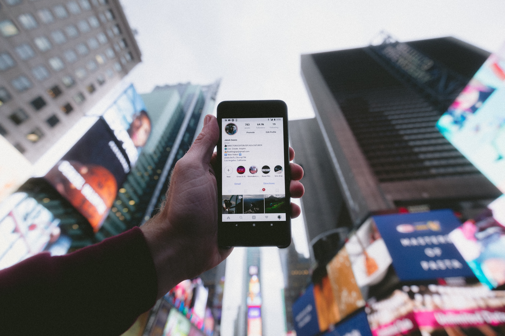
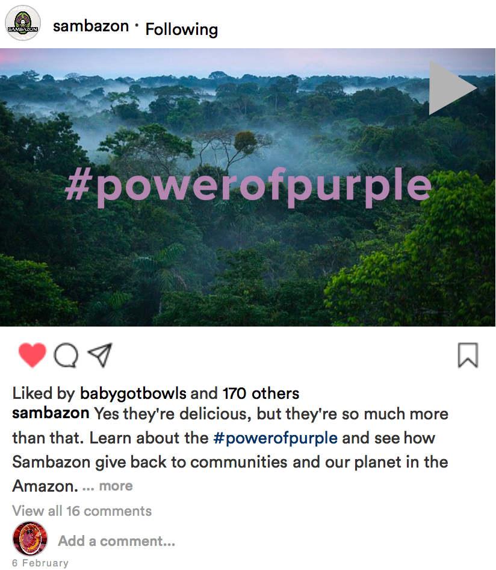
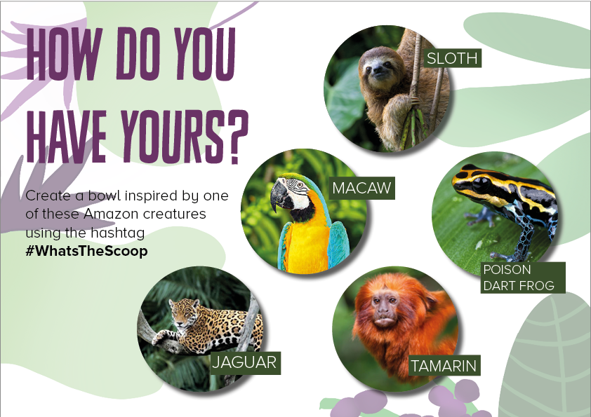
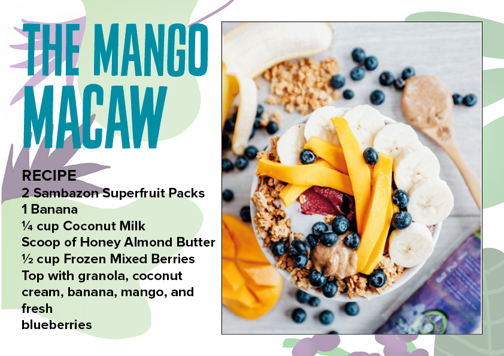
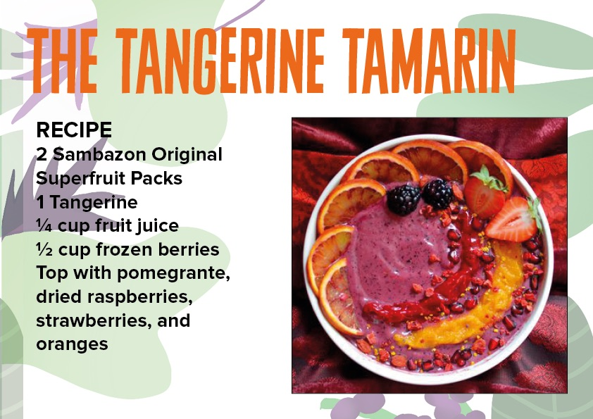
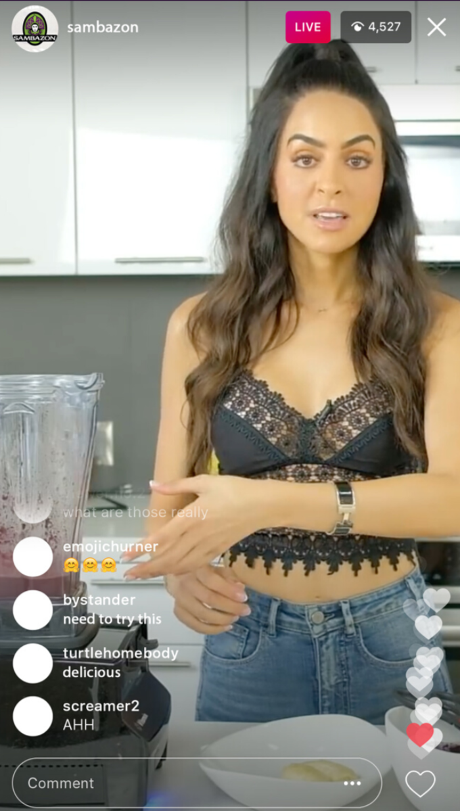

The next part of this digital marketing campaign project is creating the content for the social media platforms. I have created these posts using Adobe Photoshop, and created an animated video on Adobe AfterEffects.
For this post, I wanted to pull a quote directly from my primary research, and challenge current expectations of this product. The quote was “[acai is] a food for wealthy, new age idiots”, and I wanted to emphasise the positive effects that acai has on not only the body, but also communities who are farming this product. I used an image of some children who go to a school that Sambazon have donated to, to highlight how they give back to these communities. I used the campaign's hashtag '#powerofpurple' on both the post and the caption, and created illustrations for the background image using Procreate on my iPad, which gave an earthy feel.

This next post is an animated infographic on how Sambazon give back to communities. In my primary research, people said that they found emotive campaigns memorable, which is why I wanted to focus on this. I only produced one video, as this would take up a large amount of the budget.

The aim of these posts are to encourage user generated content. Here I have used the hashtag '#WhatsTheScoop', and the posts challenge the audience to come up with their own acai bowls, which are inspired by animals from the Amazon Rainforest. As previously mentioned, this will result in the followers themselves promoting the brand by using the hashtag.



The image below are some other examples of marketing that can be used on Instagram. The first one is an example of influencer marketing, where the influencer is taking over the Sambazon Acai Instagram Live. The benefit of this is that it will pull in that influencer's audience, and have a wider reach. However, sometimes influencers are associated with marketing fad products, so it is important to use an influencer that is credible, and perhaps someone who is into cooking and healthy eating.


The second image is an example of an Instagram filter. These Instagram filters have become increasingly popular in 2020, and what is good about them is that anyone can see and use them, whether they are following Samabazon or not, which again is a great way to bring in a new audience.